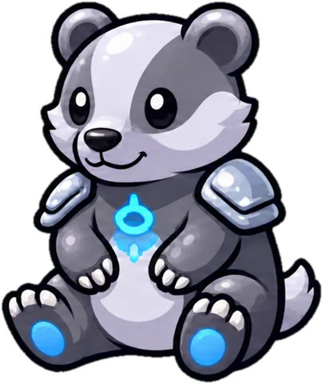

Tap a stage to read its story.
Glacicub is a round, grey-furred badger cub sitting upright with a tiny blue gemstone visible on its chest, and chunky forelegs it holds out from its body as if ready to hug something. Its wide dark nose twitches constantly and it has the habit of sitting directly on whatever its trainer is trying to work on. Found near the entrance tunnels of the Steel Fortress, it gets underfoot of every armoured guardian that passes. They have tried to shoo it away many times and it has never once left.
Field note: Glacicub has sat on 47 separate guardian documents without being asked and ruined exactly none of them - through sheer luck.
Steel Fortress. Glacicub and its family are found in the Steel Fortress. See everyone who lives there.
Share a Bond Food that matches its types to become friends. Glacicub loves:
A Bond Food is not a trick. It joins your spirit with the Kimuro's spirit, and only when it chooses you.
Print the Kimuro adventure packs: mazes, cards, a board game and Bond Mark medals.
See the printable packs